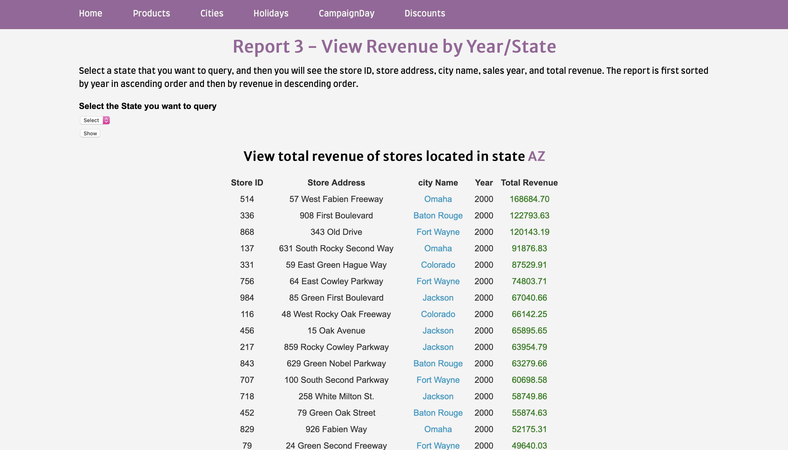
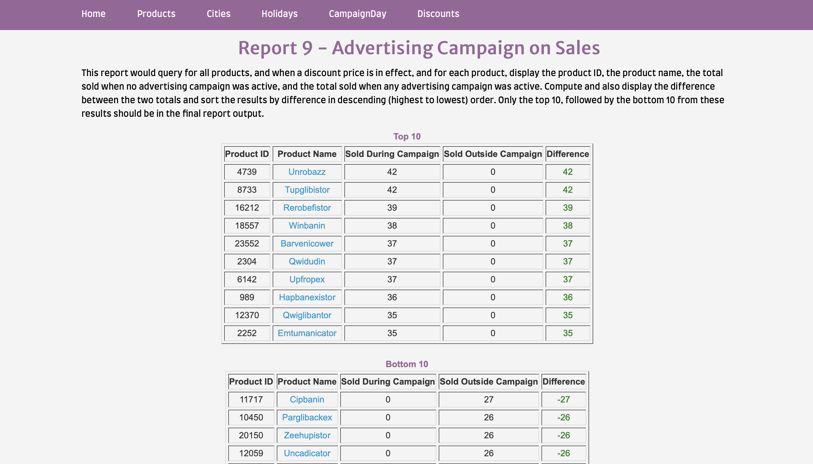
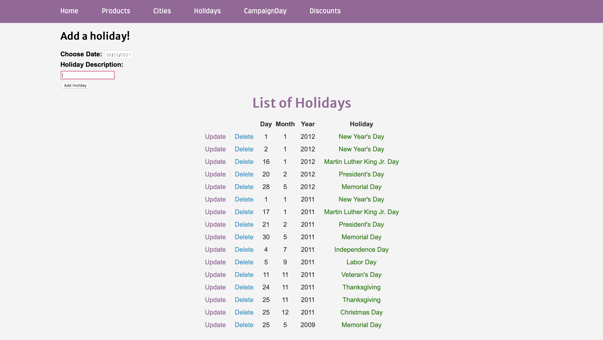
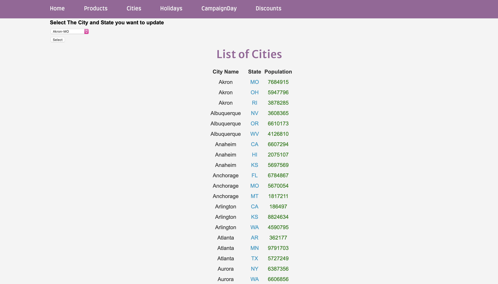
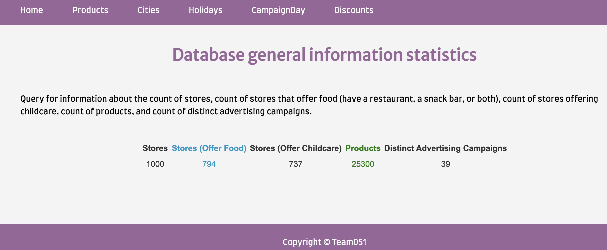

LEOFURN Sales Reporting System (LSRS)
This is a course project covered in CS6400 Database course at Georgia Institute of Technology.
The main task of this project is to design and implement a reporting system for a furnature company, which includes building up a database from stratch, implement and managing database, and finally provide a interface for users to check the reports and data. In addition, the user can also update the databese by adding/deleting/changing some infomation in the provided webpage, for example, the user can update the population of cities.
There are there parts of the reporting system. The main part is viewing reports which contains 9 reports based on different needs of the user. Apart from that, the user will also be able to update infomation to the database, for instance, the population of cities. To have a overall view of the whole database, the user will be able to check the general statistics like count of stores, count of distinct advertising campaigns so on and so forth.
Technologies
- Postgres
- Python
- Djingo
- HTML/CSS
- Flask
Functionalities
1. View reports
The main project of this interface is to generate all 9 reports and allow user to view them. The report reflect important sales statistics that will allow user to see the results of make decisions about their marketing strategies.
 2. Update database
The user will be able to add/delete/update infomation in the main menu to "mess with" the database.
 3. Check general statistics
The user will be able to check the general statistics of the database to have a overall view of the whole system.
